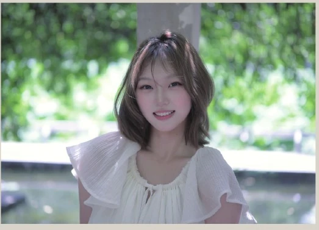
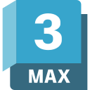
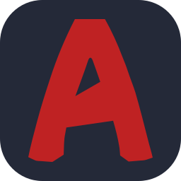
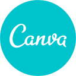
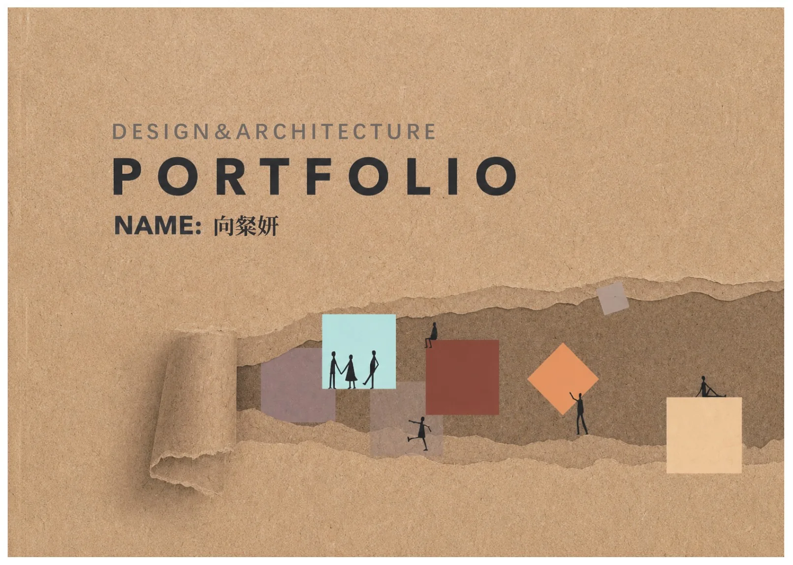

01 / 景观与建筑
隐岫
中国国家公园武夷山月亮湾驿站及观景台概念设计
从《山海经》神话意象与武夷山地貌出发，以“巨石为骨、虚空为魂”组织建筑。混凝土单体、流动屋面与层叠平台共同回应茶田、溪流、竹林和云雾，形成低干预的自然文化体验场所。
生长的场域
Designing connections between place, culture and people.
创作者：向粲妍 Cecilia
南昌大学·建筑与设计学院·环境设计专业
向下滚动 SCROLL DOWN
关于我
我是向粲妍，南昌大学建筑与设计学院环境设计本科生，专注空间创意方向。
从自然景观、乡村更新到空间与文化 IP，我通过研究、叙事和视觉转译，让地域文化以新的方式被感知、使用与传播。
工具与技能
从空间推演、视觉表达，到研究整理与智能协作，我用不同工具把想法一步步转化为可以被看见、理解和体验的设计。
Rhino 8 · 3ds Max · 天正建筑 · AutoCAD · D5 Render
Photoshop · Illustrator · Premiere Pro · Canva
ChatGPT · Gemini · Codex · CAJViewer

Rhino 8
3ds Max
AutoCAD 天正建筑 D5 Render Photoshop
Illustrator
Premiere Pro
Photoshop
Illustrator
Premiere Pro

Canva作品选集 · 2024—2026
建筑景观、空间改造与品牌 IP 设计。每个项目均可展开查看作品集中的完整页面。
01 / 景观与建筑
中国国家公园武夷山月亮湾驿站及观景台概念设计
从《山海经》神话意象与武夷山地貌出发，以“巨石为骨、虚空为魂”组织建筑。混凝土单体、流动屋面与层叠平台共同回应茶田、溪流、竹林和云雾，形成低干预的自然文化体验场所。
02 / 建筑与非遗
基于活态传承的安义古村非遗文化体验馆设计
项目选址于安义古村群京台村，以“非遗继续被看见、被学习、被使用”为核心，把古村生活、手艺传承、游客体验与社区共创连接起来。空间顺应山水肌理，以当代方式转译赣派建筑意象。
03 / 落地空间与品牌
南昌大学图书馆非遗 + 咖啡空间改造
已落地并投入使用的图书馆二层空间改造。本人担任主设计负责人，负责方案设计、视觉延展与甲方沟通落地。项目融合非遗展示、咖啡社交、文化阅读，并以八大山人为原型建立“大师咖啡”品牌与 IP 系统。
04 / 品牌与 IP 设计
绿色有机农产品品牌 IP 系统
以亲切的人物与拟人蔬菜角色建立有温度、有识别度的农产品品牌。视觉系统以绿色有机为主基调，通过角色设定、Logo、海报、表情包和文创周边形成统一且可传播的品牌体验。
05 / 地方文化与 IP
青原文化 IP 形象设计
提取青原山水、人文民俗和非遗符号，以富水河、龙舟、古村建筑、客家擂茶等元素塑造系列角色，通过海报、表情包与文创周边实现地方文化的年轻化转译。
06 / 其他创作
米兰二十四节气、立体构成、视传平面作业及全国大学生电动方程式大赛相关设计。
作品游迹
建筑、空间与视觉项目的过程切片
研究与竞赛
围绕人工智能与脑机接口技术展开研究，梳理运动想象脑电信号解码的主流算法体系，对比各类深度网络模型的性能优劣，分析信号处理与模型落地难题。成果投稿至集群计算领域期刊 Cluster Computing。
项目依托微波催化热解技术，聚焦废塑料资源化利用与可持续航空燃油制备。团队拥有 18 项国家专利，并发表 20 余篇 SCI 论文。
负责赛车车身造型与气动仿真设计，带领小组完成车身三维建模、车身整体设计、人机布局与外观落地，在气动性能与轻量化之间取得平衡。
针对高校信息传达慢、意义不清晰等问题，以“全域信息聚合、智能高效触达、清朗社区共建”为目标，运用服务设计方法重构校园信息数字社区网络。
个人履历
学习、实践、组织与竞赛共同构成我的设计成长路径。
环境设计专业，空间创意方向
绩点 3.61 · 专业排名 2/74（前 5%）
完成培训并结业。
主导品牌设计与咖啡厅空间设计，项目已落地并投入使用。
设计组组长、赛车手，负责车身与品牌视觉设计。
参与标志设计与会议组织。
基础规划科实习。
担任班级团支书、学生会文体部部长，累计志愿服务 150 小时以上。
负责并参与美国青少年来华冬令营交流活动。

联系我
关于设计、研究、合作与新的场域，欢迎来信。